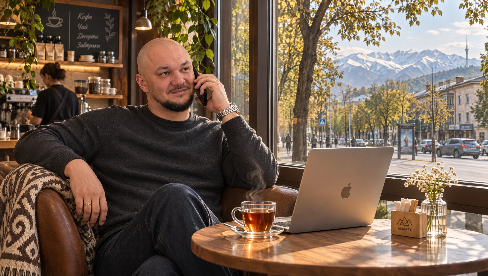
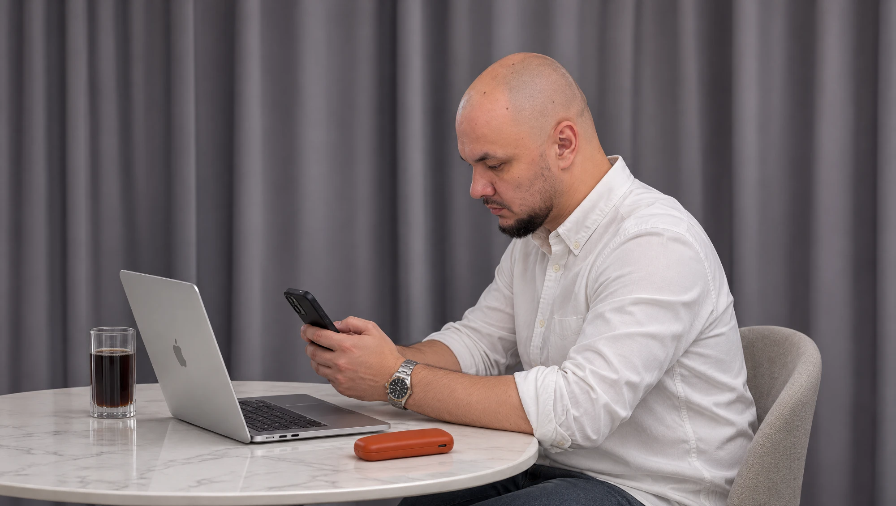

Почему я и другие ипотечные брокеры зарабатывают до 5 млн ₸ в месяц без опыта
Новички выходят на 1 млн ₸, опытные брокеры на 4 млн ₸ и выше. Без офиса с 9 до 18, без банковских планов и без связей. Рассказываю, как сам пришёл к этому после 10 лет в банке.
Автор курса. 10 лет в банке, 3 года ипотечным брокером.
Пролог · Сначала коротко
Отвечу на заголовок сразу, а потом расскажу всё по порядку
1
Почему «без опыта»?
Потому что этой профессии нигде не учат. В университете нет факультета «ипотечный брокер», такого диплома не выдаёт ни один колледж. Каждый брокер в Казахстане начинал с нуля.
Если сейчас мелькнула мысль «я в этом не разбираюсь», это нормально. Никто не разбирается, пока его не научат. Вопрос только в том, у кого учиться.
2
Почему «до 5 млн ₸»?
Потому что в Казахстане квартира нужна почти каждому, и большинство покупает её в ипотеку. Таких людей десятки тысяч.
Но одобрение не равно «подал заявку в приложении». У каждого банка и программы свои требования и лазейки, и люди годами получают отказы. Тому, кто помогает получить ключи от квартиры, платят, и платят с благодарностью.
Глава 1 · Моя история
Когда-то я сам в это не верил
Я думал как все: чтобы зарабатывать больше миллиона, нужно много работать, долго расти по карьерной лестнице или иметь связи.
Я проработал в банке 10 лет. Начинал товарным кредитным менеджером, дошёл до начальника отдела кредитования. Каждый год одно и то же: планы, которые постоянно повышают, бесконечные отчёты, новые продукты, которые нужно «пихать» каждому клиенту.
Было10 лет в банке
С 9:00 до 18:00 в отделении, а уйти в 18:00 уже роскошь. Неоплачиваемые переработки в банке норма.
Даже с закрытым планом я получал максимум 500 тысяч тенге. Всё уходило на жизнь. Поездки, подарки близким, накопления оставались мечтой.
Каждый день я видел брокеров, которые приводили клиентов в наш банк. Работали меньше меня, а зарабатывали больше.
Почему я не ушёл сразу? Я боялся.
Осуждения близких и коллег: многие думают, что брокер «просто водит людей по банкам»
Потерять пусть небольшой, но стабильный доход. У меня семья
Конкуренции: казалось, брокеров уже слишком много
Решился, только когда в очередной раз выгорел. И ни разу не пожалел.
Сейчас я думаю только об одном: почему не сделал этого раньше.
Глава 2 · Было и стало
Банк и брокерство: одна и та же жизнь, но по-разному
В банке
Брокером
Доход
до 500 тыс ₸ при закрытом плане
от 1 млн ₸ в месяц
График
9:00–18:00 и переработки
Решаю сам
Планы и отчёты
Каждый месяц, всё выше
Нет
Место работы
Привязан к отделению
Телефон и ноутбук
Что делаю
Продаю продукты по плану
Помогаю людям получить квартиру

СталоРабочий день в Алматы
Глава 3 · Путь
От кредитного менеджера до брокера, у которого очередь из клиентов
Старт
Товарный кредитный менеджер
Первая должность в банке.
10 лет
Начальник отдела кредитования
Знаю изнутри, как банк смотрит на заёмщика и почему отказывает.
Выгорание
Ухожу в брокеры
Страшно: семья, нет оклада, «брокеров и так много».
1 неделя
Первые 500 000 ₸
Не за месяц с утра до вечера, а за неделю. И появилось свободное время.
3 года
Клиентов больше, чем я могу выдать
Физически не успеваю оформить всех, кто обращается.
Глава 4 · Доход в месяц
Сколько зарабатывают в банке и в брокерстве
Полоски в одном масштабе, чтобы была видна реальная разница.
Доход в месяц, ₸
Банк, максимум500 тыс ₸
Брокер-новичок1 млн ₸
Опытный брокер4 млн ₸ +
×8
Столько раз доход опытного брокера выше максимальной зарплаты в банке. Новичок получает в 2 раза больше уже в начале.
Цифры из практики автора. Доход зависит от количества сделок и вашей активности и не гарантируется.
Глава 5 · Чего я не ожидал
Работа брокера оказалась совсем не такой, как я думал
Близкие
Вместо осуждения пошли просьбы о помощи
Друзья и родственники стали обращаться сами: помочь с квартирой им, их знакомым, знакомым знакомых. Появились новые связи и возможности.
Доход
500 000 ₸ за неделю, а не за месяц
Больше всего я боялся остаться без денег. А первые 500 тысяч заработал за одну неделю, и впервые за годы появилось время на себя и семью.
Конкуренция
Брокеров много, хороших единицы
Клиенты, которые приходят от других брокеров с просьбой «исправить и сделать как надо», для меня обычное дело.
Смысл
Люди плачут от счастья у тебя в офисе
Человек годами не может получить одобрение, а потом подписывает договор на свою квартиру. Такой благодарности в банке я не видел ни разу.
Консультация молодой семьи
Глава 6 · Что делает брокер
Брокер не просто «водит в банк». Вот реальная работа
Шесть шагов от первого звонка до ключей. Каждый из них разбираем на курсе.
Знакомство и анализДоход, кредитная история, нагрузка, цель клиента.
Подбор программы и банкаГде у этого человека реальные шансы на одобрение.
Исправление слабых местЧто мешает одобрению и как это устранить.
Подготовка документовПолный пакет без ошибок и лишних кругов.
Сопровождение в банкеЗаявка, оценка, страховка, сроки.
Одобрение и ключиКлиент получает квартиру, вы получаете комиссию.
Глава 7 · Зачем мне этот курс
Клиенты у меня не закончились. Их больше, чем я могу оформить.
Я упёрся в потолок: физически не успеваю помочь всем, а таких людей по Казахстану десятки тысяч. Зато я могу научить тех, кто хочет помогать людям, не зависеть от офиса и планов и достойно на этом зарабатывать.
Не обязательно 10 лет сидеть в банке, как я. За 3 года я встречал брокеров, которые пришли из самых разных профессий:
Продавцы с рынкаБухгалтерыРиэлторыБанковские сотрудникиПредприниматели
Часть вторая
Курс
Для кого он, что внутри и ответы на сомнения
Для кого курс
Найдите свою ситуацию
01
Вы работаете в банке
Сейчас
Выгорели от планов, которые растут каждый квартал. Продаёте ненужные клиенту продукты. Сидите с 9 до 18 за небольшую зарплату.
После курса
Свободный график и доход в 2–3 раза выше, без отчётов и планов. Банковский опыт становится вашим главным преимуществом.
02
Вы риэлтор
Сейчас
Покупателям нужна ипотека, и вы отдаёте их брокерам. Комиссия за оформление уходит другому.
После курса
Сделка больше не срывается из-за отказа банка, и вы зарабатываете дважды:
Комиссия за продажу+Комиссия за ипотеку
03
Хотите сменить профессию
Сейчас
Работа не приносит ни денег, ни удовольствия. Ищете дело, где доход зависит от вас. Опыта в финансах нет.
После курса
Осваиваете профессию с нуля по пошаговой схеме и ведёте первых клиентов с поддержкой наставника.
04
Ищете дополнительный доход
Сейчас
Основная работа есть, но денег не хватает. Нужен заработок, который можно совмещать.
После курса
Ведёте клиентов в свободное время по телефону и онлайн. Одна сделка может принести сумму, сопоставимую с месячной зарплатой.
05
Хотите купить квартиру сами
Сейчас
Получали отказы или не понимаете, какую программу выбрать. Боитесь переплатить.
После курса
Оформляете ипотеку для себя на лучших условиях, а потом помогаете знакомым и зарабатываете на этом.
Программа
10 лет в банке и 3 года практики в одном курсе
Никаких общих слов, как у многих коучей. Только разбор реальных ситуаций и то, что я делаю каждый день.
Разбор кейсов с группой
Как устроена профессияПольза для клиента, стоимость услуг, как оформить себя легально.
Ипотечные программы и банки РКТребования и где больше шансов на одобрение.
Как банк принимает решениеСкоринг, кредитная история, нагрузка глазами бывшего начальника кредитования.
Сделка от заявки до ключейДокументы, сроки, пошаговые чек-листы.
Где брать клиентовСарафанное радио, риэлторы, застройщики, соцсети.
Договор и комиссияКак говорить о цене и не работать бесплатно.
Первые сделки с наставникомРеальные клиенты и обратная связь по каждому шагу.
Разборы реальных случаев
Вы видите, как я решаю конкретные ситуации.
Обратная связь весь курс
Задаёте вопрос по своему клиенту и получаете ответ.
План на завтра
Понятно, с чего начать сразу после обучения.
Сомнения
Что обычно мешает начать
У меня были те же мысли. Нажмите на вопрос, чтобы прочитать ответ.
«В банке стабильность, а у брокера всё нестабильно»
Оклад стабилен ровно до следующего повышения плана или сокращения. А спрос на ипотеку не исчезает: людям всегда нужно жильё. Стабильность даёт навык, который нужен рынку, а не кресло в отделении.
«Брокеров много, я не выдержу конкуренции»
Брокеров много, а хороших единицы. Ко мне регулярно приходят клиенты от других брокеров, чтобы всё переделать. Если вы работаете качественно, клиенты сами приводят следующих.
«Брокеры просто водят людей в банк. Я не хочу обманывать»
Хороший брокер подбирает программу, устраняет причины отказа, готовит документы и ведёт сделку до ключей. Люди, которые годами не могли получить ипотеку, плачут от счастья, а не чувствуют себя обманутыми.
«Нужны связи среди начальников в банке»
Ипотеку одобряют не связи, а правильно подготовленная заявка. В курсе я показываю, как банк принимает решение, чтобы вы попадали в требования без звонков «знакомым».
«Нужен офис»
Большая часть работы идёт по телефону, в мессенджерах и онлайн. Офис не обязателен. Встретиться с клиентом можно где угодно.
«Кредитование ужесточили, работы нет»
Всё наоборот. Чем строже требования, тем больше отказов и тем нужнее специалист, который знает, как их пройти.
«Сейчас всё онлайн, люди оформляются сами»
Подать заявку в приложении может каждый. Получить одобрение может не каждый. Ко мне приходят как раз те, кому приложение уже отказало.
«Курсы продают, когда в нише уже не заработать»
Я продолжаю работать брокером и сам веду сделки. Курс появился потому, что клиентов больше, чем я могу обслужить.
«Нужно много лет отработать в банке»
Мои 10 лет в банке уже собраны в этом курсе, проходить их заново не нужно. Среди брокеров есть бывшие продавцы с рынка и бухгалтеры.
«Я уже покупал курсы, там одна общая информация»
Здесь разборы конкретных ситуаций, чек-листы и обратная связь по вашим клиентам. То, что я делаю каждый день, а не теория.

Эпилог · Запись на курс
Я жалею только об одном: что не решился раньше
Каждый месяц, который вы откладываете, это ещё один месяц планов, отчётов и зарплаты, которой не хватает. Людям в Казахстане по-прежнему нужны квартиры. И им нужен тот, кто поможет их получить.
Указанные суммы дохода основаны на личном опыте автора и не являются гарантией. Результат зависит от количества сделок, вашей активности и ситуации на рынке.